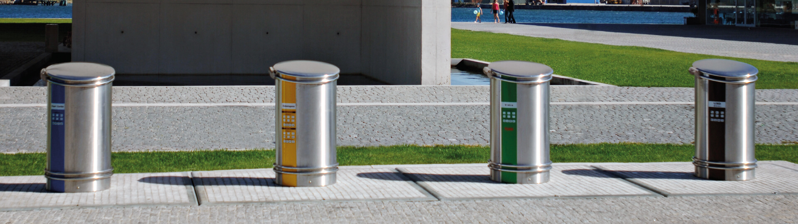
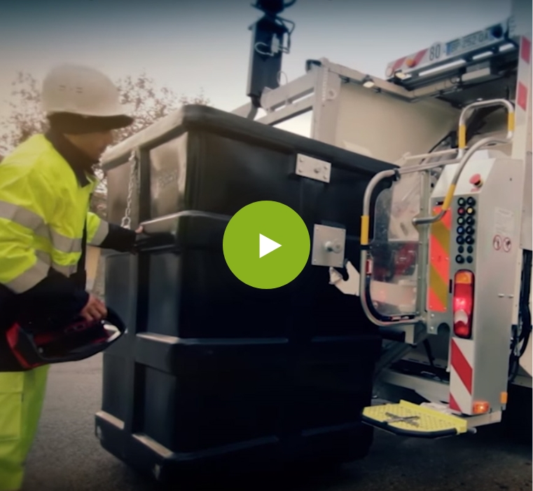
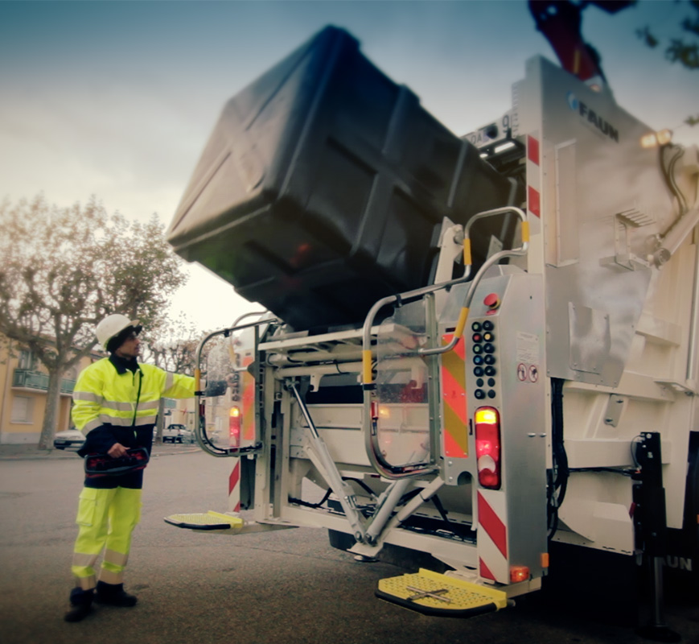
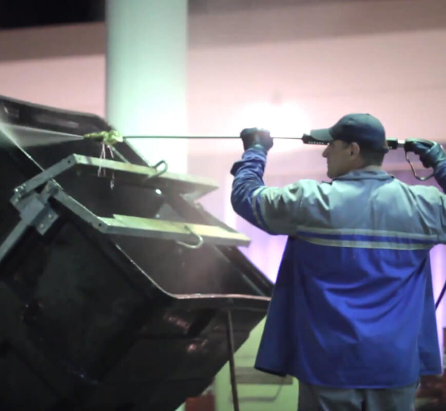
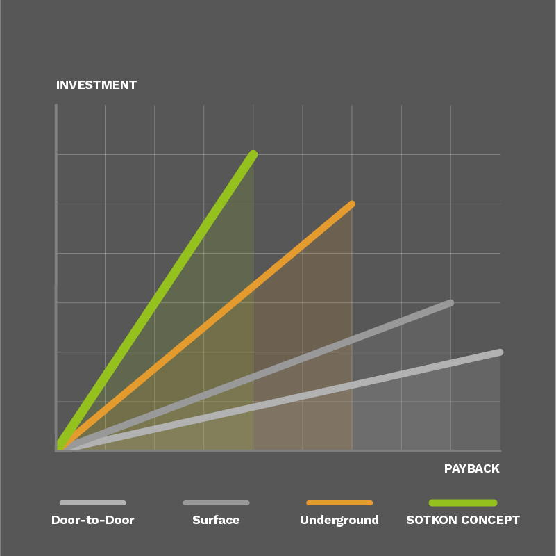
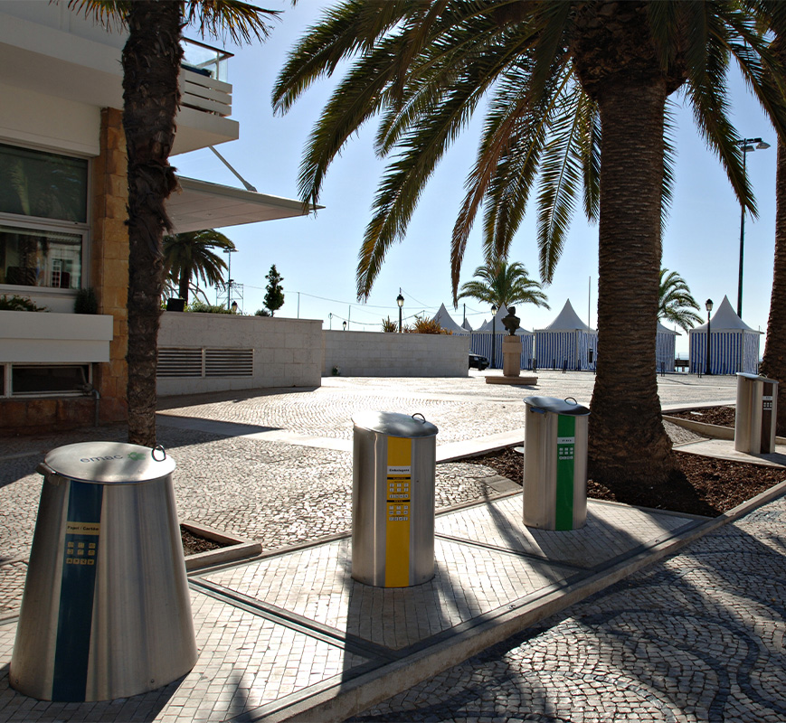
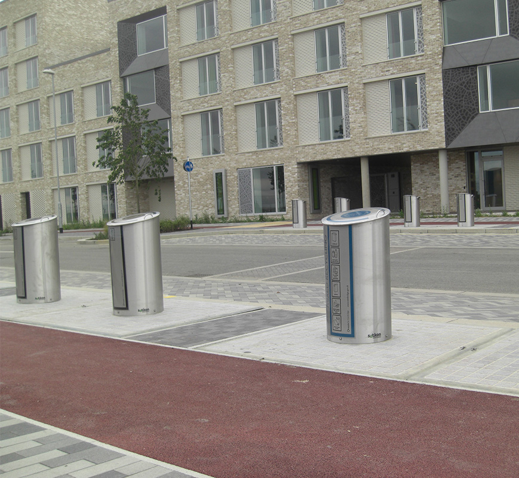
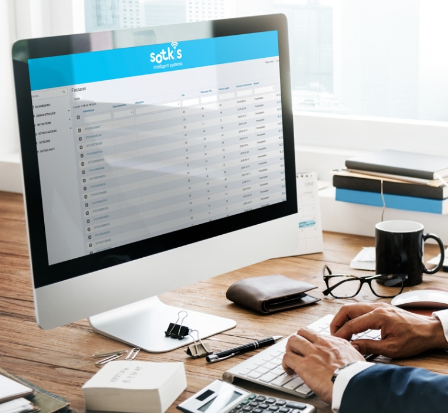

Koncept system
Advantages built around operational simplicity.
Learn how the Sotkon Koncept underground system reduces collection pressure, street clutter and long-term operating cost while supporting cleaner waste separation.
Why Koncept
Less movement above ground. More capacity below it.

01
Less collection vehicles
With the Sotkon Koncept underground system, municipalities can keep using normal rear-loading collection vehicles. A light crane installed on the truck box is enough to collect the 3m3 closed-bottom underground container.
This means collection capacity can be tripled without a parallel investment in a dedicated fleet. Shorter routes also reduce maintenance, fuel use, CO2 emissions and unnecessary trips.
Explore SOTKIS Level
02
Less personnel
The collection operation can be completed in about three minutes by one operator: the vehicle driver. The process is fast, repeatable and designed to reduce exposure around the collection point.
The system can be further optimized with an automatic hook, allowing the crane to pick up the underground container and move it to the unloading area with minimal manual intervention.
View video gallery
03
Less maintenance
The simplicity of the Koncept solution combines the benefits of underground bin systems with significantly lower maintenance needs.
Periodic cleaning, hygienization and lock lubrication are the core recurring tasks, helping operators reduce equipment, staff and service overhead.
See installation and maintenance
04
Fast payback
Compared with surface and conventional underground collection systems, Sotkon Koncept can reduce operating cost by lowering collection frequency, personnel needs, vehicle wear, fuel use and maintenance.
The old Sotkon material cites up to 30% operating-cost reduction, supported by local entities with long operational experience using the system.
Ask about savingsOperational costs
Where the savings come from.
| Waste collection | Door-to-door | Surface | Underground | Sotkon Koncept |
|---|---|---|---|---|
| Capacity | 100 liter | 1000 liter | 3000 liter | 3000 liter |
| Man power | 47% | 45% | 20% | 20% |
| Vehicles + maintenance | 20% | 20% | 30% | 25% |
| Fuel costs | 28% | 25% | 20% | 20% |
| Containers + maintenance | 5% | 5% | 10% | 5% |
| Savings | 5% | 20% | 30% |

05
Perfect urban integration
Koncept can be integrated into urban surroundings while improving the cleanliness and visual order of the street.
Intake columns can be adapted to the city, the waste stream and the surrounding area. Pedestrian platform finishes can also be customized for historic, tourist or high-footfall spaces.
View photo gallery
06
Separation at the source
Separation at source is one of the most cost-effective ways to manage recyclable waste. Sotkon equipment supports correct disposal with accessible, attractive intake columns.
Access-control options can further increase separation rates by linking the user interaction to PAYT or monitored collection models.
Explore intake columns
07
PAYT ready
Sotkon equipment can support pay-as-you-throw principles for fairer waste-management taxation and more responsible disposal habits.
With PAYT-enabled intake columns, clients can manage users, understand deposit behavior and gather the data needed for better policy and collection planning.
See SOTKIS PAYTNext step
Turn operational advantages into a project case.
For the rebuild, this page should become the commercial proof page: clear benefits, real savings data, videos, case studies and a direct path to ask for an estimate.